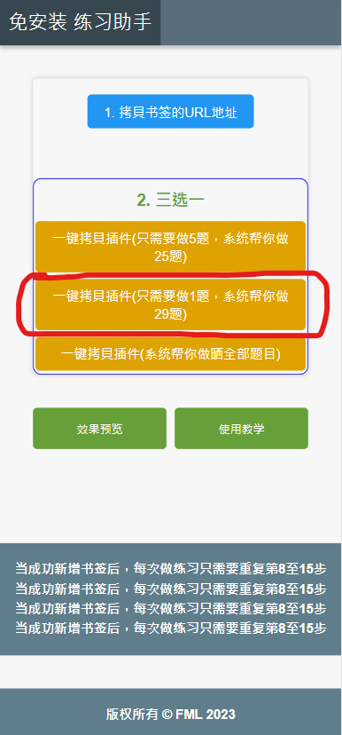
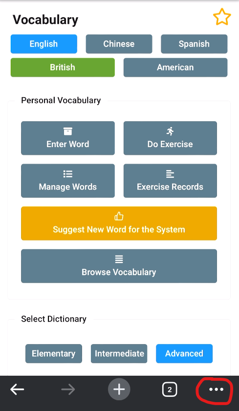

1. 先按「拷貝书签的URL地址」
2. 使用Google Chrome到目标网站后，打开「．．．」
3. 选择「新增书签(Add to Bookmarks)」

4. 选择「编辑(EDIT)」
5. Name：随便都得
URL是粘贴刚刚拷貝过来的地址
URL是粘贴刚刚拷貝过来的地址
6. 例子

7. 点选「一键拷貝插件(只需要做1题，系统帮你做29题)」

8. 到达这样的页面后(vocabbulary)，打开「．．．」
9. 选择书签(Bookmarks)

10. 选择刚刚新增的书签
11. 屏幕右下方会出现一个齿轮
12. 打开后，在Console页面中粘贴刚刚拷貝过来的程序
13. 点击Execute(执行)
14. 约等候10秒左右(视乎机型)，会出现以上画面，此时再按齿轮
15. 让助手帮帮你，加快完成速度。